These are some example pictures of the design process I went through and the final results. What I really focused on was changing the colors from what they were originally to bolder colors in order to really help the user focus on the important features of the app. You can check out the original design on the Companion Website or download the app in the app store. Otherwise, check out my design process below.
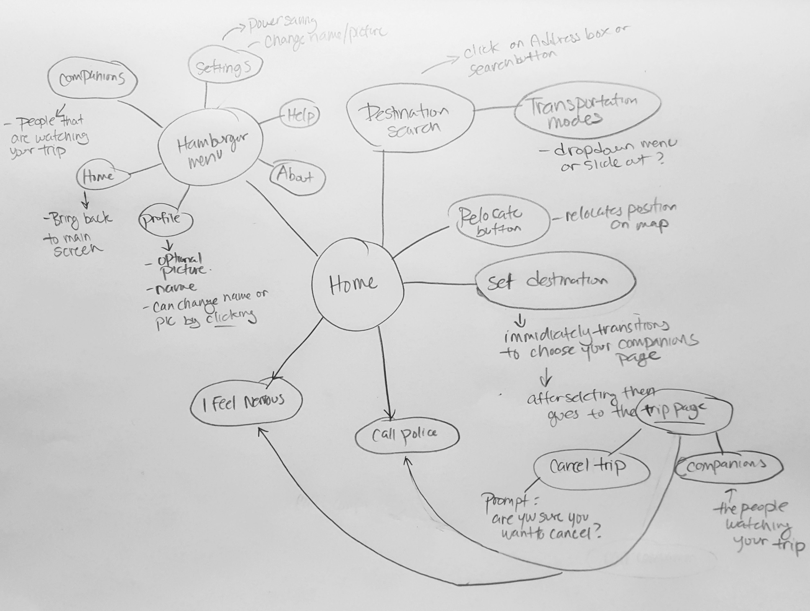 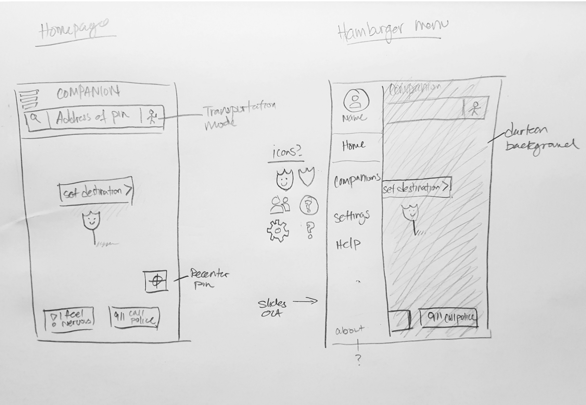 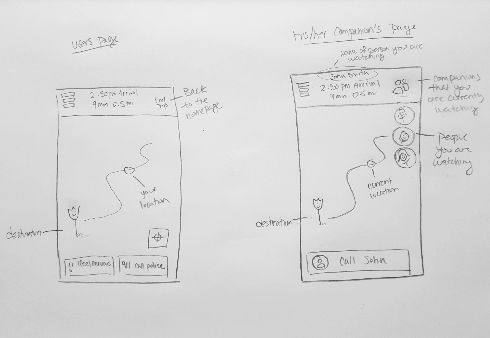 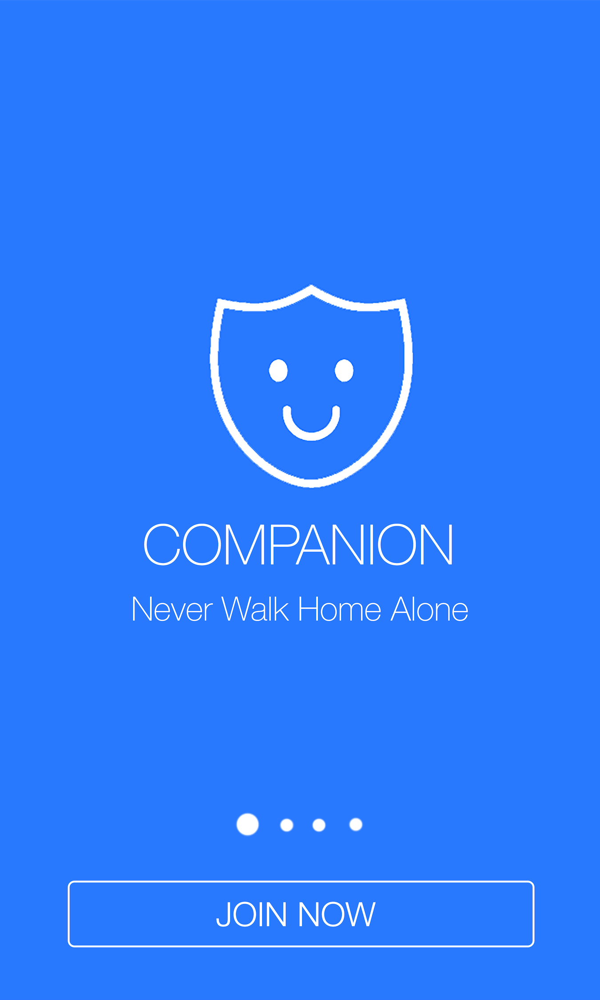 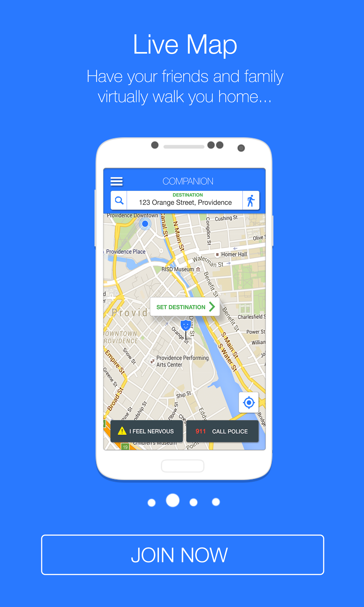 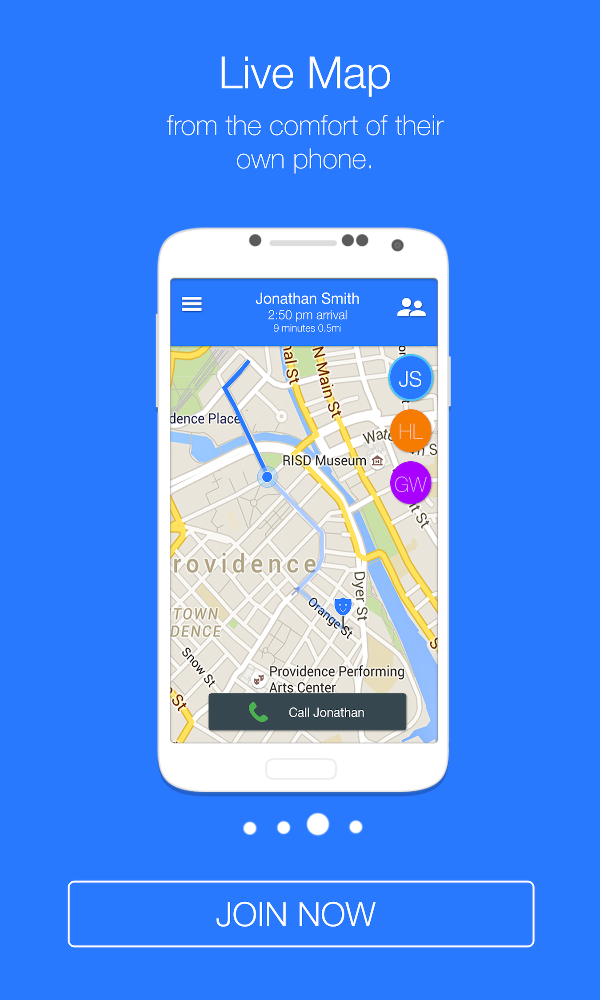 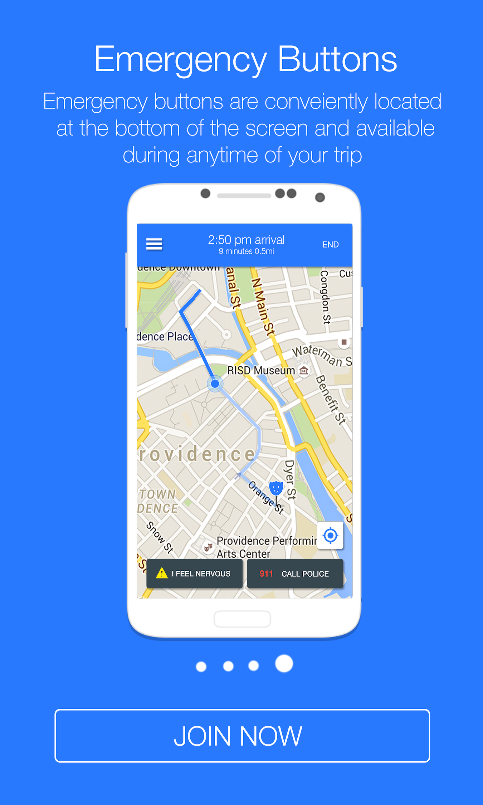 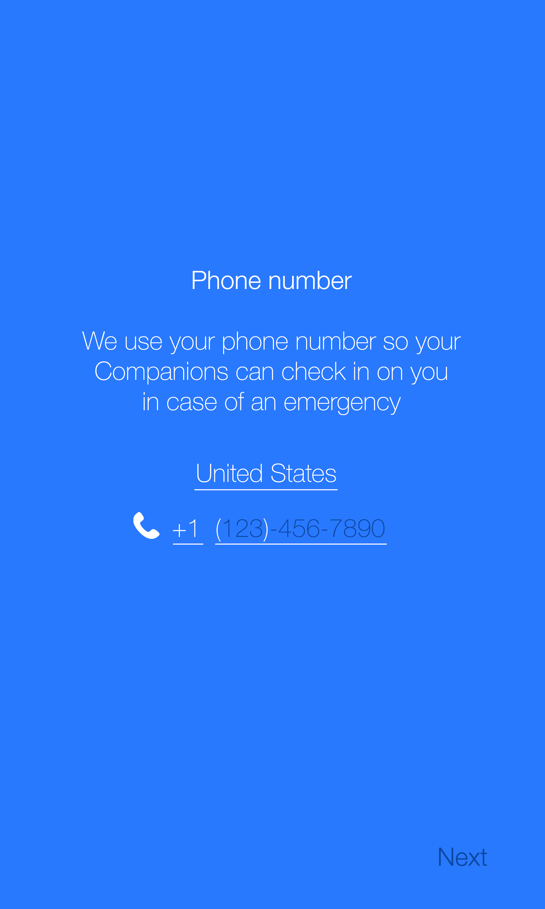 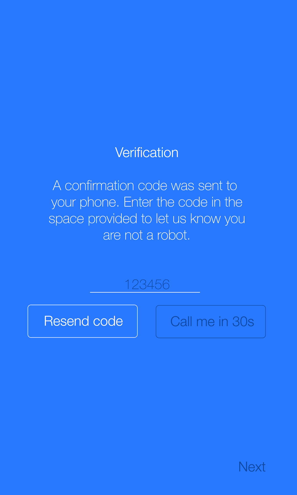 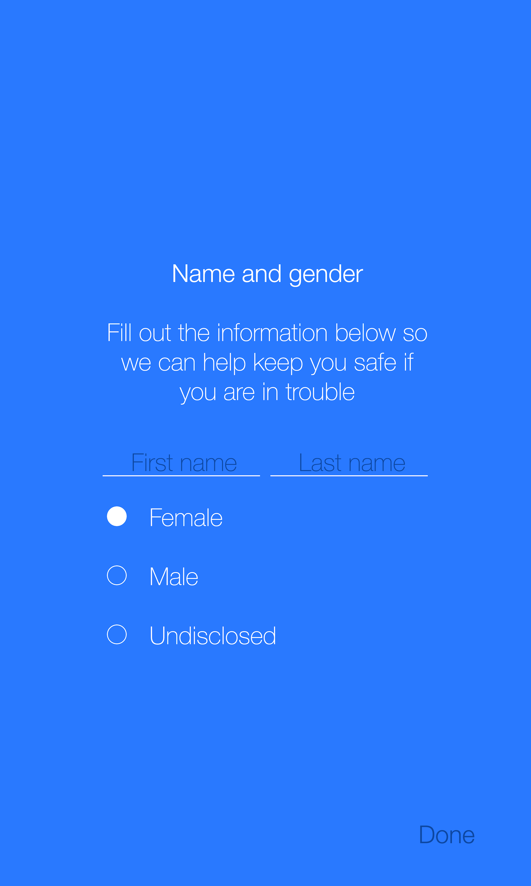 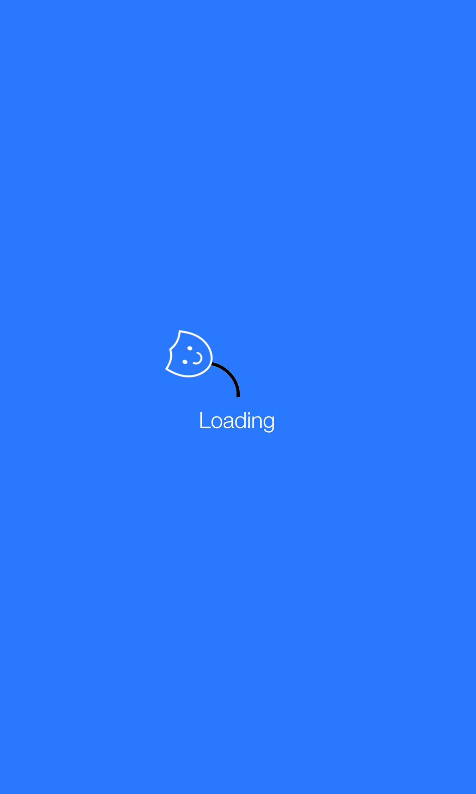 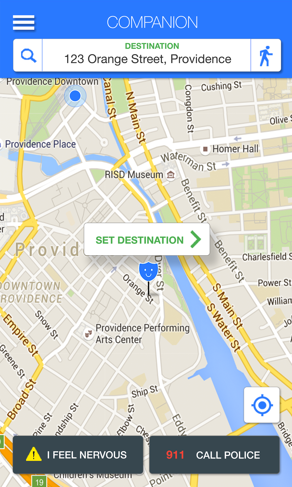 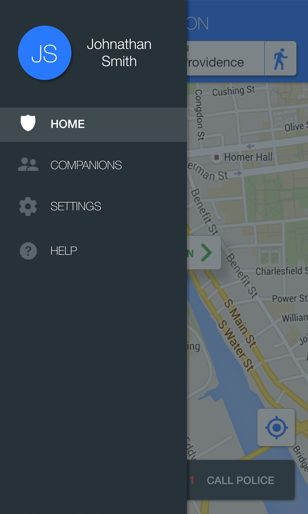 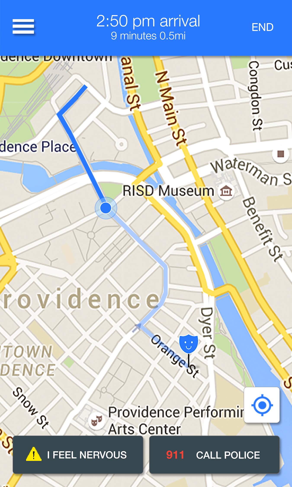 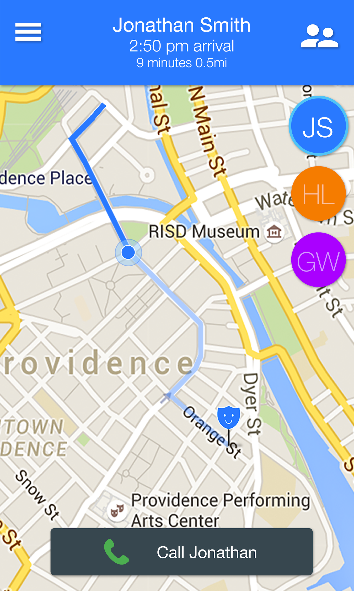